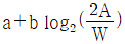
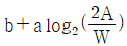
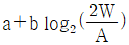
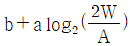
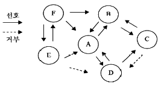
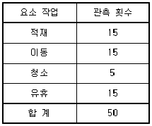

인간공학기사 (2020-06-06 기출문제)
1과목: 인간공학개론
1. 회전운동을 하는 조종창치의 레버를 20° 움직였을 때 표시장치의 커서는 2cm 이동하였다. 레버의 길이가 15cm 일 때 이 조종 장치의 C/R비는 약 얼마인가?
- 2.62
- 5.24
- 8.33
- 10.48
(정답률: 73%)

2. 정보에 관한 설명으로 옳은 것은?
- 대안의 수가 늘어나면 정보량은 감소한다.
- 선택반응시간은 선택대안의 개수에 선형으로 반비례한다.
- 정보이론에서 정보란 불확실성의 감소라 정의할 수 있다.
- 실현 가능성이 동일한 대안이 2가일 경우 정보량은 2bit 이다.
(정답률: 74%)
3. 인간-기계 시스템에서의 기본적인 기능올 볼 수 없는 것은?
- 정보의 수용
- 정보의 생성
- 정보의 저장
- 정보처리 및 결정
(정답률: 75%)
4. 신호검출 이론(signal detection theory)에서 판정기준을 나타내는 우도비(likelihood ratio) β와 민감도(sensitibity) d에 대한 설명 중 옳은 것은?
- β가 클수록 보수적이고 d가 클수록 민감함을 나타낸다.
- β가 작을수록 보수적이고 d가 클수록 민감함을 나타낸다.
- β가 클수록 보수적이고 d가 클수록 둔감함을 나타낸다.
- β가 작을수록 보수적이고 d가 클수록 둔감함을 나타낸다.
(정답률: 92%)
5. 다음 피부의 감각기 중 감수성이 제일 높은 것은?
- 온각
- 통각
- 압각
- 냉각
(정답률: 88%)
6. 인간공학의 개념과 가장 거리가 먼 것은?
- 효율성 제고
- 심미성 제고
- 안전성 제고
- 편리성 제고
(정답률: 95%)
7. 인체 측정자료의 응용 시 평균치 설계에 관한 내용으로 옳지 않은 것은?
- 최소, 최대 십단값이 사용 불가능한 경우에 사용된다.
- 인체측정학적면인 면에서 보면 모든 부분에서 평균인 인간은 없다.
- 은행 창구의 접수대는 평균값을 기준으로 한 설계의 좋은 예이다.
- 일반적으로 평균치를 이용한 설계에는 보통 집단 특성치의 5%에서 95%까지의 범위가 사용된다.
(정답률: 68%)
8. 정량적인 표시장치에 대한 설명으로 옳은 것은?
- 표시장치 설계 시 끝이 둥근 지침이 권장된다.
- 계수형 표시장치의 기본형태는 지침이 고정되고 눈금이 움직이는 형이다.
- 동침형 표시장치는 인식적 암시 신호를 나타내는데 적합하다.
- 눈금이 고정되고 지침이 움직이는 표시장치를 동목형 표시장치라 한다.
(정답률: 57%)
9. 음량수준(phon)이 80인 순음의 sone 치는 얼마인가?
- 4
- 8
- 16
- 32
(정답률: 70%)
10. 다음 눈의 구조 중 빛이 도달하여 초점이 가장 선명하게 맺히는 부위는?
- 동공
- 홍채
- 황반
- 수정체
(정답률: 69%)
11. 시감각 체계에 관한 설명으로 옳지 않은 것은?
- 동공은 조도가 낮을때는 많은 빛을 통과시키기 위해 확대된다.
- 1디옵터는 1m 거리에 있는 물체를 보기 위해 요구되는 조절능이다.
- 망막의 표면에는 빛을 감지하는 광수용기인 원추체와 간상체가 분포되어 있다.
- 안구의 수정체는 공막에 정확한 이미지가 맺히도록 형태를 스스로 조절하는 일을 담당한다.
(정답률: 69%)
12. 정적 인체 측정 자료를 동적 자료로 변환할 때 활용될 수 있는 크로머(Kroemer)의 경험 법칙을 설명한 것으로 옳지 않은 것은?
- 키, 눈, 어깨, 엉덩이 등의 높이는 3% 정도 줄어든다.
- 팔꿈치 높이는 대개 변화가 없지만, 작업 중 5% 까지 증가하는 경우가 있다.
- 앉은 무릎 높이 또는 오금 높이는 굽 높은 구두를 신지 않는 한 변화가 없다.
- 전방 및 측방 팔길이는 편안한 자세에서 30% 정도 늘어나고, 어깨와 몸통을 심하게 돌리면 20% 정도 감소한다.
(정답률: 67%)
13. 청각을 이용한 경계 및 경보 신호의 설계에 관한 내용으로 옳지 않은 것은?
- 500~3,000Hz 의 진동수를 사용한다.
- 장거리용으로는 1,000Hz 이하의 진동수를 사용한다.
- 신호가 칸막이를 통과해야 할 때는 500Hz 이상의 진동수를 사용한다.
- 주의를 끌기 위해서 초당 1~3번 오르내리는 변조된 신호를 사용한다.
(정답률: 60%)
14. 사람이 일정한 시간에 두 가지 이상의 작업을 처리할 수 있도록 하는 것을 무엇이라 하는가?
- 시배분(time sharing)
- 변화감지(variety sense)
- 절대식별(absolute judgment)
- 비교식별(comparative judgment)
(정답률: 86%)
15. 사용성 평가에 주로 사용되는 평가척도로 적합하지 않은 것은?
- 과제물 내용
- 에러의 빈도
- 과제의 수행시간
- 사용자의 주관적 만족도
(정답률: 63%)
16. 키를 측정할 때 체중계가 아닌 줄자를 이용하는 것처럼 연구조사 시 측정하고자 하는 바를 얼마나 정확하게 측정하였는가를 평가하는 척도는?
- 타당성(validity)
- 신뢰성(raliability)
- 상관성(correlation)
- 민감성(sensitivity)
(정답률: 64%)
17. 청각적 신호를 설계하는데 고려되어야 하는 원리 중 검출성(detectability)에 대한 설명으로 옳은 것은?
- 사용자에게 필요한 정보만을 제공한다.
- 동일한 신호는 항상 동일한 정보를 지정하도록 한다.
- 사용자가 알고 있는 친숙한 신호의 차원과 코드를 선택한다.
- 신호는 주어진 상황 하의 감지장치나 사람이 감지할 수 있어야 한다.
(정답률: 76%)
18. 동전 던지기에서 앞면이 나올 확률은 0.4이고, 뒷면이 나올 확률은 0.6일 경우 이로부터 기대할 수 있는 평균정보량은 약 얼마인가?
- 0.65 bit
- 0.88 bit
- 0.97 bit
- 1.99 bit
(정답률: 47%)
19. 손잡이의 설계에 있어 촉각정보를 통하여 분별, 확인할 수 있는 코딩(coding) 방법이 아닌 것은?
- 색에 의한 코딩
- 크기에 의한 코딩
- 표면의 거칠기에 의한 코딩
- 형상에 의한 코딩
(정답률: 87%)
20. 다음 양립성의 종류 중 특정 사물들, 특히 표시장치(display)나 조종장치(control)에서 물리적 형태나 공간적인 배치의 양립성을 나타내는 것은?
- 양식(modality) 양립성
- 공간적(spatial) 양립성
- 운동(movement) 양립성
- 개념적(conceptual) 양립성
(정답률: 78%)
2과목: 작업생리학
21. 영상표시 단말기(VDT)를 취급하는 작업장 주변환경의 조도(lux)는 얼마인가? (단, 화면의 바탕 색상은 검정색 계통이며 고용노동부 고시를 따른다.)
- 100~300
- 300~500
- 500~700
- 700~900
(정답률: 72%)
22. 인체활동이나 작업종료 후에도 체내에 쌓인 젖산을 제거하기 위해 산소가 더 필요하게 되는 것을 무엇이라 하는가?
- 산소 빚(oxygen debt)
- 산소 값(oxygen value)
- 산소 피로(oxygen fatigue)
- 산소 대사(oxygen metabolism)
(정답률: 86%)
23. 다음 중 불수의근(involuntary mescle)과 관계가 없는 것은?
- 내장근
- 평활근
- 골격근
- 민무늬근
(정답률: 73%)
24. 시소 위에 올려놓은 물체 A와 B는 평형을 이루고 있다. 물체 A는 시소 중심에서 1.2m 떨어져 있고 무게는 35kg이며, 물체 B는 물체 A와 반대방향으로 중심에서 1.5m 떨어져 있다고 가정하였을 때 물체 B의 무게는 몇 kg 인가?
- 19
- 28
- 35
- 42
(정답률: 57%)
25. 작업강도의 증가에 따른 순환기 반응의 변화로 옳지 않은 것은?
- 혈압의 상승
- 적혈구의 감소
- 심박출량의 증가
- 혈액의 수송량 증가
(정답률: 86%)
26. 어떤 물체 또는 표면에 도달하는 빛의 밀도는?
- 조도
- 광도
- 반사율
- 점광원
(정답률: 74%)
27. 시각적 점멸융합주파수(VFF)에 영향을 주는 변수에 대한 내용으로 옳지 않은 것은?
- 암조응 시는 VFF가 증가한다.
- 연습의 효과는 아주 적다.
- 휘도만 같으면 색은 VFF에 영향을 주지 않는다.
- VFF는 조명 강도의 대수치에 선형적으로 비례한다.
(정답률: 67%)
28. 인체의 척추 구조에서 경추는 몇 개로 구성되어 있는가?
- 5개
- 7개
- 9개
- 12개
(정답률: 72%)
29. 근육 운동에 있어 장력이 활발하게 생기는 동안 근육이 가시적으로 단축되는 것을 무엇이라 하는가?
- 연축(twitch)
- 강축(tetanus)
- 원심성 수축(eccentric contraction)
- 구심성 수축(concentric contraction)
(정답률: 66%)
30. 나이에 따라 발생하는 청력손실은 다음 중 어떤 주파수의 음에서 가장 먼저 나타나는가?
- 500 Hz
- 1,000 Hz
- 2,000 Hz
- 4,000 Hz
(정답률: 80%)
31. 어떤 작업자의 8시간 작업 시 평균 흡기량은 40 L/min, 배기량은 30 L/min로 측정되었다. 만일 배기량에 대한 산소함량이 15% 로 측정되었다고 가정하면 이때의 분당 산소소비량(L/min)은 얼마인가?
- 3.3
- 3.5
- 3.7
- 3.9
(정답률: 36%)
32. 생리적 활동의 척도 중 Borg의 RPE(Ratings of Perceived Exertion) 척도에 대한 설명으로 옳지 않은 것은?
- 육체적 작업부하의 주관적 평가방법이다.
- NASA-TLX와 동일한 평가척도를 사용한다.
- 척도의 양끝은 최소 심장 박동률과 최대 심장 박동률을 나타낸다.
- 작업자들이 주관적으로 지각한 신체적 노력의 정도를 6~20 사이의 척도로 평정한다.
(정답률: 71%)
33. 신경계 중 반사(reflex)와 통합(integration)의 기능적 특징을 갖는 것은?
- 중추신경계
- 운동신경계
- 교감신경계
- 감각신경계
(정답률: 67%)
34. 근력의 상태 중 물체를 들고 있을 때처럼 신체부위를 움직이지 않으면서 고정된 물체에 힘을 가하는 상태는?
- 정적 상태(static condition)
- 동적 상태(dynamic condition)
- 등속 상태(isokinetic condition)
- 가속 상태(acceleration condition)
(정답률: 85%)
35. 다음 중 추천반사율(IES)이 가장 높은 것은?
- 벽
- 천정
- 바닥
- 책상
(정답률: 87%)
36. 사업장에서 발생하는 소음의 노출기준을 정할 때 고려해야 할 결정요인과 가장 거리가 먼 것은?
- 소음의 크기
- 소음의 높낮이
- 소음의 지속시간
- 소음 발생체의 물리적 특성
(정답률: 82%)
37. 특정과업에서 에너지 소비량에 영향을 미치는 인자로 가장 거리가 먼 것은?
- 작업 속도
- 작업 자세
- 작업 순서
- 작업 방법
(정답률: 81%)
38. 진동이 인체에 미치는 영향으로 옳지 않은 것은?
- 심박수가 증가한다.
- 시성능은 10~25Hz 대역의 경우 가장 심하게 영향을 받는다.
- 진동수와 추적 작업과의 상호연관성이 적어 운동성능에 영향을 미치지 않는다.
- 중앙 신경계의 처리 과정과 관련되는 과업의 성능은 진동의 영향을 비교적 덜 받는다.
(정답률: 69%)
39. 다음 중 고온 작업장에서의 작업 시 신체 내부의 체온조절 계통의 기능이 상실되어 발생하며, 체온이 과도하게 오를 경우 사망에 이를 수 있는 고열장해는?
- 열소모
- 열사병
- 열발진
- 참호족
(정답률: 86%)
40. 작업생리학 분야에서 신체활동의 부하를 측정하는 생리적 반응치가 아닌 것은?
- 심박수(heart rate)
- 혈류량(blood flow)
- 폐활량(lung capacity)
- 산소 소비량(Oxygen consumption)
(정답률: 78%)
3과목: 산업심리학 및 관계법규
41. 산업재해의 발생형태 중 상호 자극에 의하여 순간적(일시적)으로 재해가 발생하는 유형은?
- 복합형
- 단순 자극형
- 단순 연쇄형
- 복합 연쇄형
(정답률: 75%)
42. 단순반응시간을 a, 선택반응시간을 b, 움직인 거리를 A, 목표물의 넓이를 W라 할 때, 동작시간 예측에 관한 피츠법칙(Fitt's law)으로 옳은 것은?
- 동작시간 =

- 동작시간 =

- 동작시간 =

- 동작시간 =

(정답률: 77%)
43. 보행 신호등이 바뀌었지만 자동차가 움직이기까지는 아직 시간이 있다고 주관적으로 판단하여 신호등을 건너는 경우는 어떤 상태인가?
- 억측판단
- 근도반응
- 초조반응
- 의식의 과잉
(정답률: 89%)
44. 갈등 해결방안 중 자신의 이익이나 상대방의 이익에 모두 무관심한 것은?
- 경쟁
- 순응
- 타협
- 회피
(정답률: 87%)
45. 스트레스에 관한 설명으로 옳지 않은 것은?
- 스트레스 수준은 작업성과의 정비례의 관계에 있다.
- 위협적인 환경특성에 대한 개인의 반응이라고 볼 수 있다.
- 적정수준의 스트레스는 작업성과에 긍정적으로 작용한다.
- 지나친 스트레스를 지속적으로 받으면 인체는 자기조절능력을 상실할 수 있다.
(정답률: 80%)
46. 재해예방의 4원칙에 해당하지 않는 것은?
- 손실 우연의 원칙
- 조직 구성의 원칙
- 원인 계기의 원칙
- 대책 선정의 원칙
(정답률: 87%)
47. 제조물 책임법에서 손해배상 책임에 대한 설명으로 옳지 않은 것은?
- 해당 제조물 결함에 의해 발생한 손해가 그 제조물 자체만에 그치는 경우에는 제조물 책임 대상에서 제외한다.
- 피해자가 제조물의 제조업자를 알 수 없는 경우 그 제조물을 영리 목적으로 판매한 공급자가 손해를 배상하여야 한다.
- 제조자가 결함 제조물로 인하여 생명, 신체 또는 재산상의 손해를 입은 자에게 손해를 배상할 책임을 의미한다.
- 제조업자가 제조물의 결함을 알면서도 필요한 조치를 취하지 아니하면 손해를 입은 자에게 발생한 손해의 2배 범위 내에서 배상책임을 진다.
(정답률: 67%)
48. 리더십(leadership)과 비교한 헤드십(headship)의 특징으로 옳은 것은?
- 민주주의적 지휘형태
- 개인능력에 따른 권한 근거
- 구성원과의 사회적 간격이 넓음
- 집단의 구성원들에 의해 선출된 지도자
(정답률: 87%)
49. 하인리히는 재해연쇄론에서 재해가 발생하는 과정을 5단계 요인으로 나누어 설명하였다. 그 중 사고를 예방하기 위한 관리 활동들이 가장 효과적으로 적용될 수 있는 단계는 무엇이라고 주장하였는가?
- 개인적 결함
- 사고 그 자체
- 사회적 환경(분위기)
- 불안전행동 및 불안전상태
(정답률: 88%)
50. 다음 소시오그램에서 B의 선호신분지수로 옳은 것은?

- 1/5
- 2/5
- 3/5
- 4/5
(정답률: 79%)
51. FTA(Fault Tree Analysis)에 대한 설명으로 옳지 않은 것은?
- 해석하고자 하는 정상사상(top event)과 기본사상(basic event)과의 인과관계를 도식화하여 나타낸다.
- 고장이나 재해요인의 정성적 분석 뿐만 아니라 정량적 분석이 가능하다.
- “사건이 발생하려면 어떤 조건이 만족되어야 하는가?” 에 근거한 연역적 접근방법을 이용한다.
- 정성적 결함나무(FT : Fault Tree)를 작성하기 전에 정상사상이 발생할 확률을 계산한다.
(정답률: 55%)
52. 다음 중 민주적 리더십과 관련된 이론이나 조직형태는?
- X이론
- Y이론
- 라인형 조직
- 관료주의 조직
(정답률: 68%)
53. 피로의 생리학적(physiological) 측정방법과 거리가 먼 것은?
- 뇌파 측정(EEG)
- 심전도 측정(ECG)
- 근전도 측정(EMG)
- 변별역치 측정(촉각계)
(정답률: 75%)
54. 어느 작업자가 평균적으로 100개의 부품을 검사하여 불량품 5개를 검출해 내었으나 실제로는 15개의 불량품이 있었다. 이 작업자가 100개가 1로트로 구성된 로트 2개를 검사하면서 2개의 로트 모두에서 휴먼에러를 범하지 않을 확률은?
- 0.01
- 0.1
- 0.81
- 0.9
(정답률: 55%)
55. 상시작업자가 1,000명이 근무하는 사업장의 강도율이 0.6이었다. 이 사업장에서 재해발생으로 인한 연간 총 근로 손실일수는 며칠인가? (단, 작업자 1인당 연간 2,400시간을 근무하였다.)
- 1,220일
- 1,320일
- 1,440일
- 1,630일
(정답률: 66%)
56. 라스무센(Rasmussen)은 인간 행동의 종류 또는 수준에 따라 휴먼 에러를 3가지로 분류하였는데 이에 속하지 않는 것은?
- 숙련기반 에러(skill-based error)
- 기억기반 에러(momory-based error)
- 규칙기반 에러(rule-based error)
- 지식기반 에러(knowledge-based error)
(정답률: 59%)
57. 휴먼 에러 방지대책을 설비요인, 인적요인, 관리요인 대책으로 구분할 때 인적 요인에 관한 대책으로 볼 수 없는 것은?
- 소집단 활동
- 작업의 모의훈련
- 인체측정치의 적합화
- 작업에 관한 교육훈련과 작업 전 회의
(정답률: 83%)
58. 관리 그리드 모형(management grid model)에서 제시한 리더십의 유형에 대한 설명으로 옳지 않은 것은?
- (9,1)형은 인간에 대한 관심은 높으나 과업에 대한 관심은 낮은 인키형이다.
- (1,1)형은 과업과 인간관계 유지 모두에 관심을 갖지 않는 무관심형이다.
- (9,9)형은 과업과 인간관계 유지의 모두에 관심이 높은 이상형으로서 팀형이다.
- 5,5)형은 과업과 인간관계 유지에 모두 적당한 정도의 관심을 갖는 중도형이다.
(정답률: 81%)
59. NIOSH의 직무 스트레스 모형에서 직무스트레스 요인에 해당하지 않는 것은?
- 작업요인
- 개인적요인
- 조직요인
- 환경요인
(정답률: 48%)
60. Herzberg의 동기위생 이론에서 위생요인에 대한 설명으로 옳지 않은 것은?
- 위생요인이 갖추어지지 않으면 구성원들은 불만족해 진다.
- 위생요인이 갖추어지지 않으면 조직을 떠날 수 있다.
- 위생요인이 갖추어지지 않으면 성과에 좋지 않은 영향을 준다.
- 위생요인이 잘 갖추어지게 되면 구성원들에게 열심히 일하도록 동기를 자극하게 된다.
(정답률: 63%)
4과목: 근골격계질환 예방을 위한 작업관리
61. 어떤 한 작업의 25회 시험관측치가 평균 0.35, 표준편차가 0.08 일 때, 오차확률 5%에서 필요한 최소 관측횟수는 얼마인가? (단, t(25, 0.⑤) = 2.069, t(24, 0.⑤) = 2.064, t(26, 0.⑤) = 2.⑤6 이다.)
- 89
- 90
- 91
- 92
(정답률: 38%)
62. 동작 경제의 3원칙 중 신체 사용에 원칙에 해당하지 않는 것은?
- 가능하다면 중력을 이용한 운반 방법을 사용한다.
- 두 손의 동작은 같이 시작하고 같이 끝나도록 한다.
- 휴식시간을 제외하고는 양손이 동시에 쉬지 않도록 한다.
- 두 팔의 동작은 동시에 서로 반대방향으로 대칭적으로 움직이도록 한다.
(정답률: 57%)
63. 작업장 시설의 재배치, 기자재 소통상 혼잡지역 파악, 공정과정 중 역류현상 점검 등에 가장 유용하게 사용할 수 있는 공정도는?
- Gentt Chart
- Flow Diagram
- Man-Machine Chart
- Operation Process Chart
(정답률: 69%)
64. 산업안전보건법령상 근골격계부담작업 유해요인 조사에 관한 설명으로 옳지 않은 것은?
- 사업주는 유해요인 조사에 근로자 대표 또는 해당 작업 근로자를 참여시켜야 한다.
- 사업주는 근로자가 근골격계부담작업을하는 경우 3년마다 유해요인 조사를 하여야 한다.
- 신규 입사자가 근골격계부담작업을 배치되는 경우 즉시 유해요인 조사를 실시해야 한다.
- 신설되는 사업장의 경우 신설일로부터 1년 이내에 최초의 유해요인 조사를 실시해야 한다.
(정답률: 74%)
65. 표본의 크기가 충분히 크다면 모집단의 분포와 일치한다는 통계적 이론에 근거하여 인간 활동이나 기계의 가동상황 등을 무작위로 관측하여 측정하는 표준시간 측정방법은?
- Work Sampling 법
- Work Factor 법
- PTS(Predetermined Time Standards) 법
- MTM(Methods Time Measurement) 법
(정답률: 77%)
66. 문제분석 도구 중 빈도수가 큰 항목부터 차례대로 나열하는 방버으로 불량이나 사고의 원인이 되는 항목을 찾아내는 기법은?
- 간트 차트
- 특성요인도
- PERT 차트
- 파레토 차트
(정답률: 77%)
67. 근골격계질환 예방·관리 교육에서 사업주가 모든 작업자 및 관리감독자를 대상으로 실시하는 기본교육 내용에 해당되지 않는 것은?
- 근골격계 질환 발생 시 대처요령
- 근골격계 부담작업에서의 유해요인
- 예방·관리 프로그램의 수립 및 운영 방법
- 작업도구와 장비 등 작업시설이 올바른 사용 방법
(정답률: 82%)
68. 근골격계질환의 발생원이을 개인적 특성요인과 작업 특성요인으로 구분할 때, 개인적 특성요인에 해당하는 것은?
- 반복적인 동작
- 무리한 힘의 사용
- 작업방법 및 기술수준
- 동력을 이용한 공구 사용 시 진동
(정답률: 63%)
69. 근골격계질환의 예방원리에 관한 설명으로 옳은 것은?
- 예방보다는 신속한 사후조치가 더 효과적이다.
- 작업자의 신체적 특성 등을 고려하여 작업장을 설계한다.
- 공학적 개선을 통해 해결하기 어려운 경우에는 그 공정을 중단해야 한다.
- 사업장 근골격계 예방정책에 노사가 협의하면 작업자의 참여는 중요치 않다.
(정답률: 81%)
70. 작업관리에 관한 내용으로 옳지 않은 것은?
- 작업연구에는 시간연구, 동작연구, 방법연구가 있다.
- 방법연구는 테일러에 의해 시작, 길브레스에 의해 더욱 발전되었다.
- 작업관리는 생산과정에서 인간이 관여하는 작업을 주 연구대상으로 한다.
- 작업관리는 생산 활동의 여러 과정 중 작업 요소를 조사, 연구하여 합리적인 작업 방법을 설정하는 것이다.
(정답률: 66%)
71. 입식 작업대에서 무거운 물건을 다루는 작업(중작업)을 할 때 다음 중 작업대의 높이로 가장 적절한 것은?
- 작업자의 팔꿈치 높이로 한다.
- 작업자의 팔꿈치 높이보다 10~20cm 정도 높게 한다.
- 작업자의 팔꿈치 높이보다 5~10cm 정도 낮게 한다.
- 작업자의 팔꿈치 높이보다 10~30cm 정도 낮게 한다.
(정답률: 52%)
72. 작업관리의 문제해결방법으로 전문가 집단의 의견과 판단을 추출하고 종합하여 집단적으로 판단하는 방법은?
- 브레인스토밍(Brainstorming)
- 마인드 맵핑(Mind mapping)
- 마인드 멜딩(Mind melding)
- 델파이 기법(Delphi technique)
(정답률: 63%)
73. Work Factor에서 고려하는 4가지 시간 변동요인이 아닌 것은?
- 동작 타임
- 신체 부위
- 인위적 조절
- 중량이나 저항
(정답률: 28%)
74. 영상표시 단말기(VDT) 취급작업자 작업관리지침상 취급작업자의 작업자세로 적절하지 않은 것은?
- 손목은 일직선이 되도록 한다.
- 화면과의 거리는 최소 40cm 이상이 확보되어야 한다.
- 화면상의 시야범위는 수평선상에서 10~15° 위에 오도록 한다.
- 윗팔(upper arm)은 자연스럽게 늘어뜨리고, 팔꿈치의 내각은 90° 이상이 되어야 한다.
(정답률: 60%)
75. 각 한명의 작업자가 배치되어 있는 3개의 라인으로 구성된 공정의 공정시간이 각각 3분, 5분, 4분일 때 공정효율은?
- 65%
- 70%
- 75%
- 80%
(정답률: 40%)
76. 어느 회사가 외경법을 기준으로 10%의 여유율을 제공한다. 8시간 동안 한 작업자를 워크샘플링한 결과가 다음 표와 같다. 이 작업자의 수행도 평가 결과 110%였다. 청소 작업의 표준 시간은 약 얼마인가?

- 7분
- 58분
- 74분
- 81분
(정답률: 49%)
77. NIOSH Lifting Equation 의 변수와 결과에 대한 설명으로 옳지 않은 것은?
- 수평거리 요인이 변수로 작용한다.
- 권장무게한계(RWL)의 최대치는 23kg 이다.
- LI(들기지수) 값이 1 이상이 나오면 안전하다.
- 빈도 계수의 들기 빈도는 평균적으로 분당 들어 올리는 횟수(회/분)를 나타낸다.
(정답률: 77%)
78. 비효율적인 서블릭(Therblig)에 해당하는 것은?
- 계획(Pn)
- 조립(A)
- 사용(U)
- 쥐기(G)
(정답률: 55%)
79. 작업방법 설계 시 고려해야할 사항으로 옳지 않은 것은?
- 눈동자의 움직임을 최소화한다.
- 동작을 천천히 하여 최대 근력을 얻도록 한다.
- 최대한 발휘할 수 있는 힘의 30% 이하로 유지한다.
- 가능하다면 중력 방향으로 작업을 수행하도록 한다.
(정답률: 64%)
80. 근골격계부담작업에 해당하지 않는 작업은?
- 하루에 10회 이상 25kg 이상의 물체를 드는 작업
- 하루에 총 2시간 이상, 분당 2회 이상 4.5kg 이상의 물체를 드는 작업
- 하루에 2시간 이상 집중적으로 자료입력 등을 위해 키보드 또는 마우스를 조작하는 작업
- 하루에 총 2시간 이상 목, 어깨, 팔꿈치, 손목 또는 손을 사용하여 같은 동작을 반복하는 작업
(정답률: 76%)